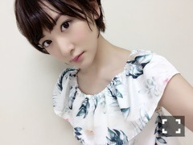
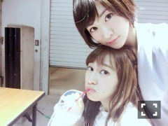
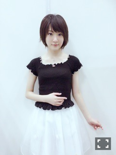

| 2016/06 07 Tue | 恐縮です(ノ∀；｀) |
ネットのニュースに上がっていた！
6月10日発売の月刊ニュータイプさんで、
甲鉄城のカバネリの
生駒のコスプレを
乃木坂46の生駒ちゃんがやりまする！
動機は苗字が同じ生駒だからっ！！
そしてほんとに毎週毎週カバネリが面白すぎて、熱すぎて大好きな作品だからです。
生駒くんと一致している所は、
名前くらいで、
顔も体型も性別も全然違うし、
私体がモヤシだから、生駒くんみたいに筋肉質じゃないから、
カバネリver.の生駒くんは出来ませんでしたが
私の夢を叶えて下さったニュータイプさん本当にありがとうございます(´；ω；｀)
カバネリファンの皆様は、お見苦しいかもしれませんが、
今月ちょっと我慢して下さい(´；ω；｀)(´；ω；｀)
でも、本当に出来て嬉しかった〜(´；ω；｀)⭐️⭐️⭐️
ツラヌキ筒持たせて貰えて、、
無名ちゃんのイラストも拝見しまして、
本当無名ちゃんかわいいっ
毎週
無名ちゃんが
『生駒っ！！』
って呼ぶのめちゃ自分に置き換えてしまうのよね。
あと、何話目だったっけなぁ〜
丁度じょしらくの稽古中のカバネリでね、
頑張れ〜！！生駒〜〜っっっ！！！
って逞生達が叫んでて、
それも全然自分には言われてないけど、
勝手に拝借して、自分の糧にしました(^-^)
菖蒲様の血を貰った時はドキドキしました(^-^)(^-^)
菖蒲様。
とりあえず、無名ちゃんはお米をたくさん食べてね。
カバネリは、女の子みんな可愛いですね(ง ˙ω˙)ว
鰍ちゃん、嫁に貰いたい。。
自分でも生駒くんになった写真撮りましたが、
発売日まで秘密しておきますね(^-^)
あ！
この生駒くんのウィッグの制作を
お友達のコスプレイヤーのロゼさんに依頼しましたっ！！
やはり、プロの仕様は素晴らしいかったです！
そこも含め、見てみて下さいね〜！

あと！もう一つお知らせ〜ヽ(・∀・)ノ
こちらは6月16日発売の、
KERAの表紙を飾る事になりましたっ！！
ありがたいです(´；ω；｀)(´；ω；｀)
しかもメイクは久しぶりのなみっきーさん！！
ラブリーいこちゃんが観れますよ〜ヽ(・∀・)ノ
お洋服も可愛くて、メイクも可愛くて
ぜひ是非手にとって下さいねっ！！
まだオフショット載せられないから、この前のノギルームのパジャマをっ


きゃっぷ
この前の横浜での握手会、
ハルジオンが咲く頃の個別握手会ラストでしたね。
そしてまいまいが乃木坂人生最後の個別握手会でした。
時間の都合により、最後までいられなかったから、
後で写真みて、
無事セレモニーも終えたのだと、
だけど、
まだまだ卒業コンサートまであるからねっ！
よろしくお願いします(^-^)
あ、握手会のお洋服ねっ

会場寒くて羽織ってましたが、
こんな服着てました
アンクルージュのお洋服ですっヽ(・∀・)ノ⭐️
15枚目選抜発表ありました！
生駒ちゃんをいつも応援して下さっている皆様本当にありがとうございます。
皆様を楽しませるプロになれる様に日々精進します！
私の乃木坂での位置は年々、自分が言葉をどう発したら良いのか、
何が1番いろんな方に同じ言葉の意味で届くのか分からなくなって来ました。
でも、私がどうこう思って、行動に移したくても、
毎回任された位置を一生懸命やるしかないのです。
私は15枚目も一生懸命頑張ります。
ではっ
へばなっ☆彡
コメント(560)
2016/06/07 17:24